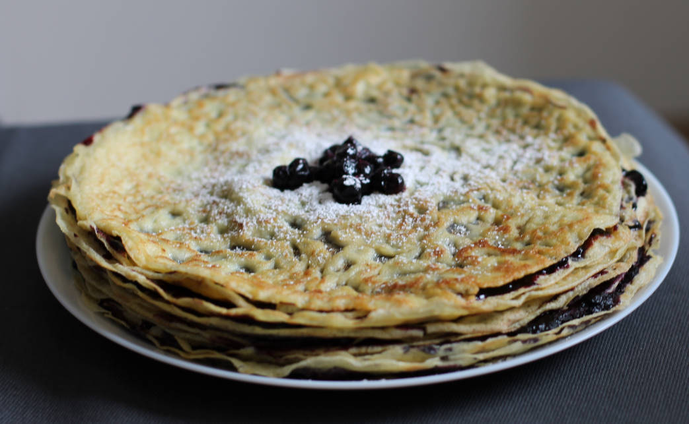

Pancakes – Norwegian
Thin-ish like crepes. Works well with both sweet and savory things (toppings?). Pro-tip for ensuring a completely smooth batter without any lumps: Use an immersion blender for the mixing.
metadata
Created on 2020-04-13 Last updated on 2020-05-16
Recipe should yield this much: Using a 28 cm diameter pan – 13 pancakes. 925 g.
Estimated time needed: At least 58 minutes. At most 1 hours 3 minutes.
Ingredients
| 600 | g | milk | ||
| 300 | g | eggs | 1 medium sized egg is approximately 50 g. | |
| 250 | g | flour | ||
| 50 | g | butter | ||
| 4 | tbsp | oil | For frying, can be substituted with butter or lard. | |
| 0.5 | tsp | salt | Optional, use if using unsalted butter. |
Scaling
Timeline
Directions
⌛ Active time 2 minutes | Passive time 5 minutes
- 50 g butter
Melt butter:
Melt butter, and set it aside to let it cool so that it doesn't mess up the eggs.
⌛ Active time 2 minutes
- 300 g eggs | 1 medium sized egg is approximately 50 g.
- 600 g milk
Mix eggs and milk
⌛ Active time 3 minutes
- 250 g flour
Add four:
To ensure that the mixture ends up completely smooth using an immersion blender works amazingly well.
⌛ Active time 1 minutes
- 0.5 tsp salt | Optional, use if using unsalted butter.
Add the melted butter:
If using unsalted butter add a pinch of salt as well.
⌛ Passive time 30 minutes
Let batter swell for half an hour
⌛ Active time 20 minutes
- 4 tbsp oil | For frying, can be substituted with butter or lard.
Fry on medium high heat:
Add a bit of oil to the pan for frying in between each of the pancakes or just when the pan is getting dry. Let the pan heat up a bit so that you don't start the first pancake in a cold pan. Setting the heat to 6.5 out of 9 seems to work well on our stove, but you'll probably have to do some trial and error to figure out what works for you.